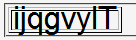
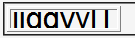

line-heightプロパティで小さい値を指定するなどしてテーブルセルの高さを低くしたとき、セルのボックスをはみ出す部分が表示されない。
line-heightプロパティに小さい値を指定することで行高を低くしているとき、行高の算出値の範囲を超える部分が表示されず、文字が欠けてしまう。
<table border="1"> <tr style="font:2em Arial,sans-serif; line-height:0.5;"> <td>ijqgvylT</td></tr> </table>
| ijqgvylT |
tr要素は行高さを文字高さの半分にしています。
Moz1.3での表示（標準モード）
WinIE6.0での表示（標準モード）
widthプロパティで幅を指定した要素の場合、行高の範囲を超える部分が上下両方とも消えます。
<p style="line-height:0.5em; font-size:2em; width:5em; background:aqua;"> AgTj</p> <p style="line-height:0.5em; font-size:2em; background:lime;"> AgTj</p>
AgTj
AgTj
td要素など一部の要素を除き、widthプロパティを指定しないことでこのバグを回避できます。ただし、WinIE6.0標準モードでは下にはみ出る部分だけが表示されないために完全には回避できないことがあります。
WinIE5.5、WinIE6.0標準モード、WinIE6.0互換モードで不具合の発生が確認されました。